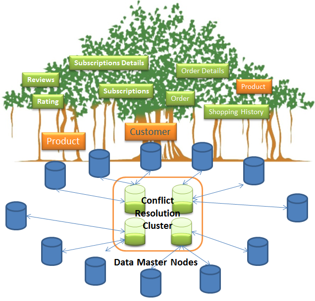

Compression - what is the right API to use?
Compression is used by a system to support Sending large packets over network faster. When the communication link is slower the data can be sent faster as we will be sending less number of bytes. Compression would be generally advantageous if request or response size is more than 1000 bytes, to reduce time spent on the network.
September 1, 2014 | | Tags : java Compression SNAPI LZ4 GZIP metrics ZLIB

Rest Over JSON or plain old sockets for communication
REST over JSON is the 1st choice when we try to expose services to the outside world. Though in recent times Web Sockets are raising up to the challenge to replace REST as rest APIS are too chatty to increase the messages sent over the network.

Serialization - Continues....
To continue further FST is not as fast in serializaton and deserialization as protobuf. It is very effective and i think i can work on top of both these ideas and develop something better that proper testing can tell.
August 13, 2014 | | Tags : java serialization externalize
Serialization - What to choose?.
The key to how well a system works has a very tight link to how efficiently the objects in the system can be sent and received. What all design considerations can i do.
August 9, 2014 | | Tags : java, serialization

Java Object Binary Serialization Metrics using ProtoBuf
Serialization is a very big part of modern java applications. Mostly simplicity and readability scores over performance. If we have a standard format that is small enough and understandable by everyone we would hop on to pick up the winner.
August 9, 2014 | | Tags : java Serialization protobuf

JMX Notification Listener
The Java notification framework is mainly used in the cache eviction space. It is a reliable way to determine wether a particular server is active and healthy as it would be constantly sending notifications and performance metrics using the JMX API.
August 9, 2014 | | Tags : java, JMX, Monitoring, JVM
JMX Notification for alerts
With the use of javax.management it is possible to notify other users/ machines about cache eviction or perform alerts for errors or warnings. The notification on MBeans can effectively used for building self healing systems. Where one server can notify others if it is overloaded so that they can take charge.
August 9, 2014 | | Tags : java, JMX, Monitoring, JVM

Monitoring my Java application using JMX MBeans
I want to get metrics out of my code. In olden days the best way to do that is by using System.out.println. I want to use the below code and see how fast it takes to run serialization and deserialization along with gzip compression.
August 9, 2014 | | Tags : java, JMX, Monitoring, JVM

File upload using java servlet and Tomcat
As part of this blog we will look at how to upload and process a file using java Servlet API. I will not be using the Apache File-Upload API.

How to evenly split data across different machines or buckets?
i am going to demonstrate how this can be effectively done from code using java. You will not be seeing code specific to communicating to different machines but will demonstrate the same using my own custom implementation of ArrayMap and % (MOD) operator.

Rebalancing data across different shards
This is a continuation of the post how to split keys evenly across different buckets/machines. In this we will be looking at how to rebalance the buckets when we want to increase a bucket size as this operation is a little trickier than simple array copy.
August 8, 2014 | | Tags : java, Rebalancing, JVM

Throwable Vs Exception which one to catch?
I was writing my web application using tomcat and after some iterative changes and unit test changes my unit test succeeded but my web app hangs on a servlet listener class. I kept waiting for sometime and nothing happened. Was looking for an error all it said was failed for the previous error in the log file.
How to interrupt a thread in java?
Just like how the OS allows us to kill a long running task we should have the flexibility in our code to stop long running threads.

Thread Pool Executor
It is all about threads. If we have your handle on thread pool we got it all under control. Everything is about how much you can do at a time.
August 8, 2014 | | Tags : multi threading, java 8


JVM options for performance and GC
When we work with java we need to know JVM and how it collects garbage.
August 8, 2014 | | Tags : java, GarbageCollection, JVM
Frequency, Sum, Average and Map Reduce with java 8
How can do group by and get the count of occurrences of objects in a list. We want to do that based on certain attributes only.
August 8, 2014 | | Tags : java, Agregation, java 8

Circular Buffer using arrays in java
Circular Buffer implementation has many important usecases from logging to serialization to use fixed memory size
How to do async journaling from your server code
I want to write journal entries or log entries of transactions to disk. I don't want the system to slow down due to logging. I want to have a rolling log and should be able to recover when some thing wrong happens.
August 7, 2014 | | Tags : java, journaling
Narasimhan Vallur - Banyan Blog!
I am a software engineer who wants to write kick ass server side software. Here I am writing blogs as brain dump - while i get in the weeds of Banyan. Banyan - A highly performant, Distributed, scalable, consistent and simple to use No-Sql Solution.